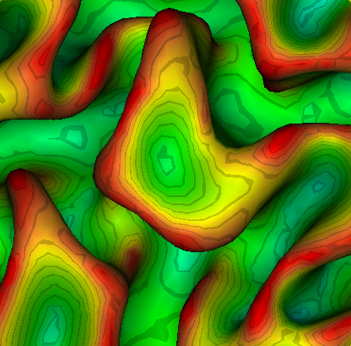

Nos Cours

Introduction à l'imagerie cérébrale
Découvrez les bases de l'imagerie cérébrale, y compris les technologies et méthodologies utilisées pour explorer le cerveau humain.
Commencer
Les structures corticales
Explorez les différentes structures corticales et leur rôle dans le fonctionnement du cerveau.
Explorer

La profondeur sulcale
Apprenez à analyser la profondeur sulcale et son importance dans l'étude de la morphométrie cérébrale.
Découvrir